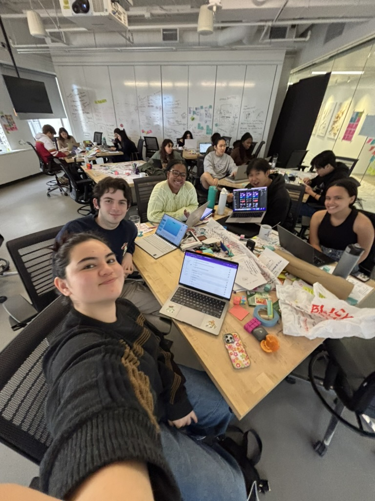
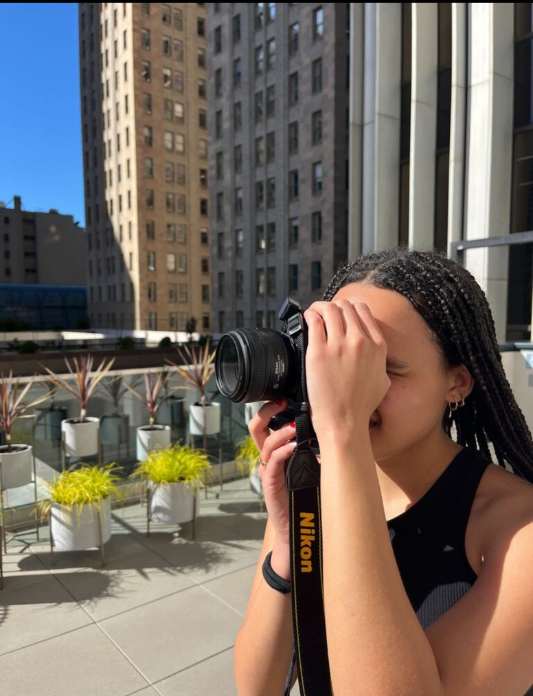

About me
I'm a student at Northwestern University studying journalism,
data science and design. Beyond my studies,
I’m also a person with a diverse range of interests —
food, running, college basketball, ice skating... But above all else,
I’m a person who loves understanding people.
In my work, my focus is bridging
humanity,
clarity and
visual engagement.
Whether it means simplifying complex info or building a user-centered
prototype, my goal is always to meet people where they are.
My passions lie at the intersection of community-driven storytelling, data visualization and UX design. If any of that interests you, reach out! I'd love to get to know you.


